一个开箱即用的 Minecraft 启动器 —— 版本实时同步、Mod 一键下载、实例完全隔离、内置虚拟网联机，还有一个懂 Minecraft 的 AI 助手。
从下载版本到装 Mod、从联机到查攻略，一个启动器全搞定。
直接读取 Mojang 官方版本清单，官网一出新版本就能立即看到并下载，正式版、快照、预览版全支持。
Mod、光影、资源包、数据包、插件，从 Modrinth / CurseForge 一键下载安装，自动解析依赖，装错自动回落。
每个版本 / 加载器组合都是独立实例，Mod 与存档互不干扰，随时切换，再也不用反复搬运文件。
登录账号即可跨网络加入好友的世界，内置局域网自动发现，支持 IPv4 / IPv6 双栈，有公网 IPv6 就能开服。
论坛发帖问答 + 实时聊天室，数据挂在主机上，自己开主机就是自己当服主，大家连同一个地址就是同一个社区。
一句话生成整合包，自动挑版本 / 加载器 / Mod 并逐个联网校验；问版本特性、Mod 用法、报错排查也都能答。
全部为真实运行截图，点击可放大查看。
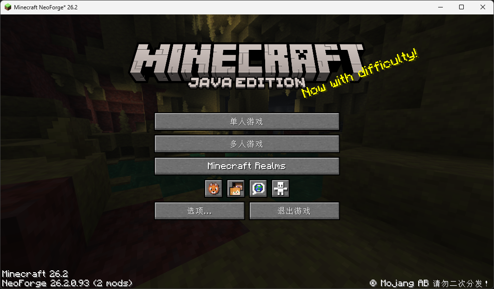
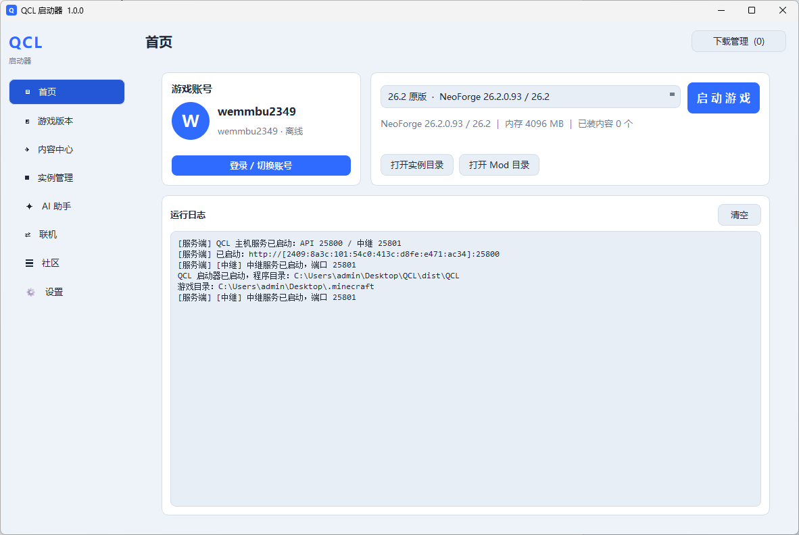
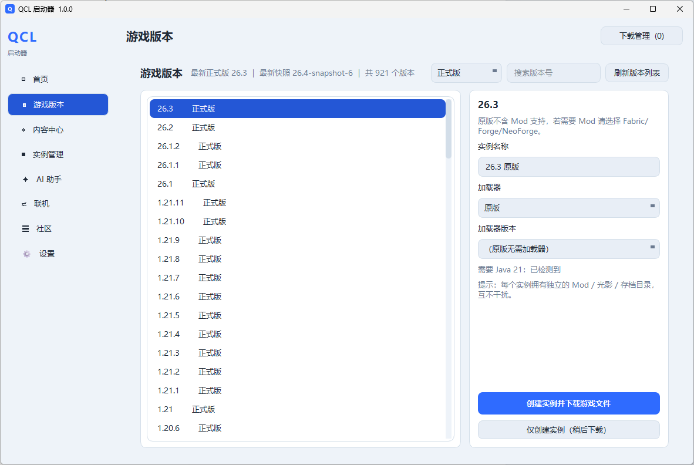
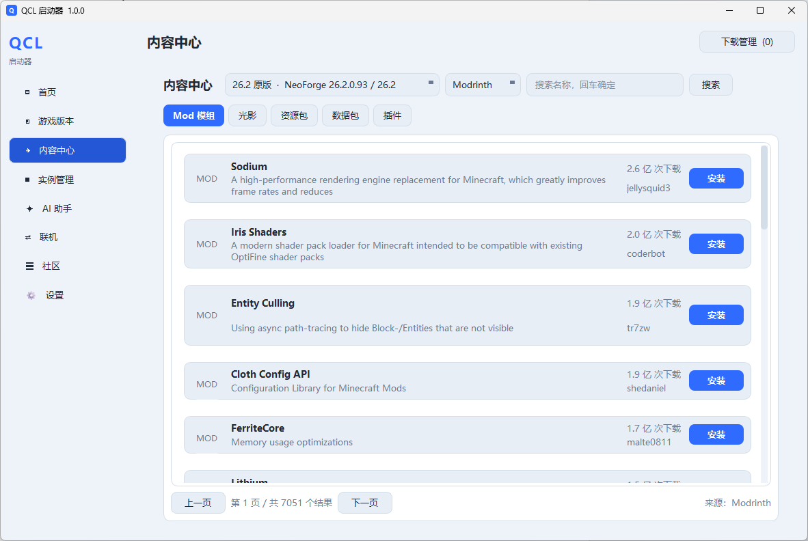
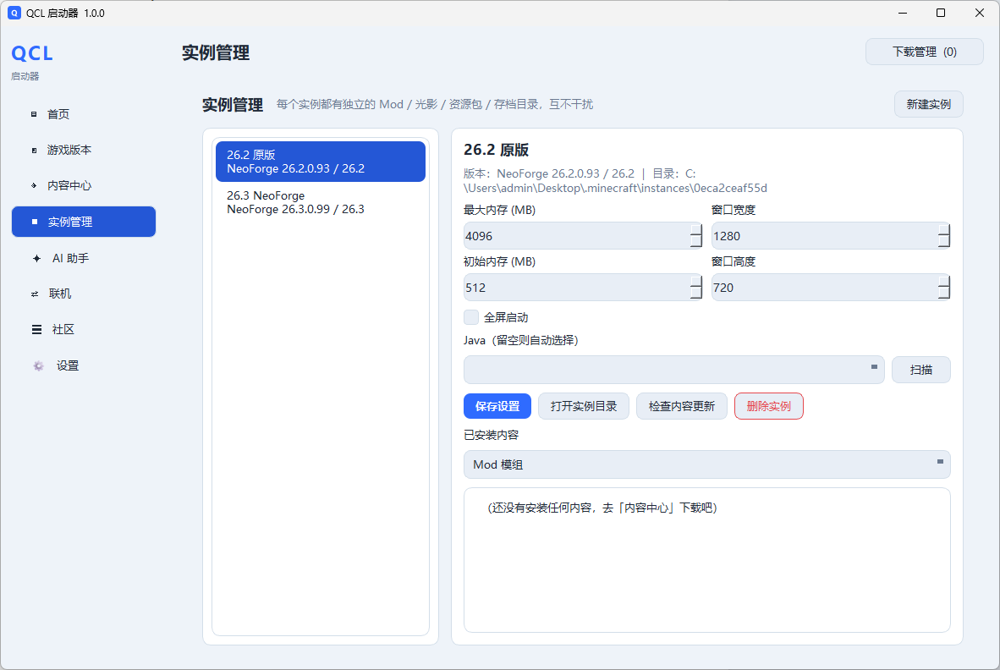
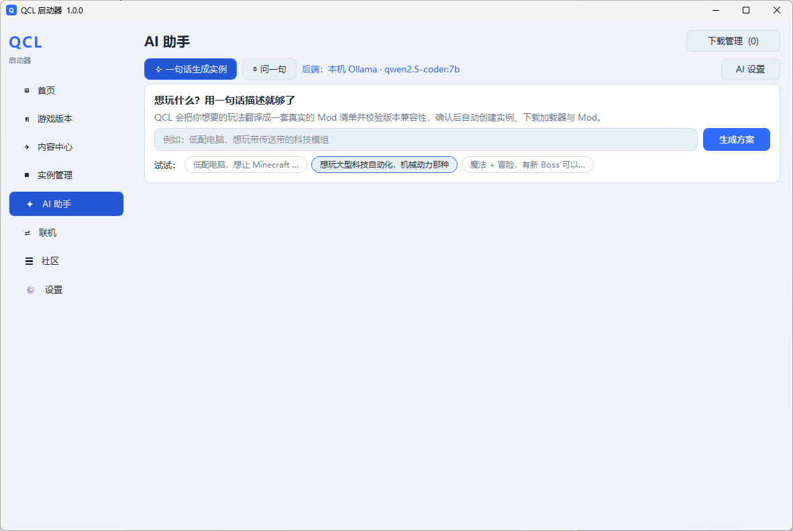
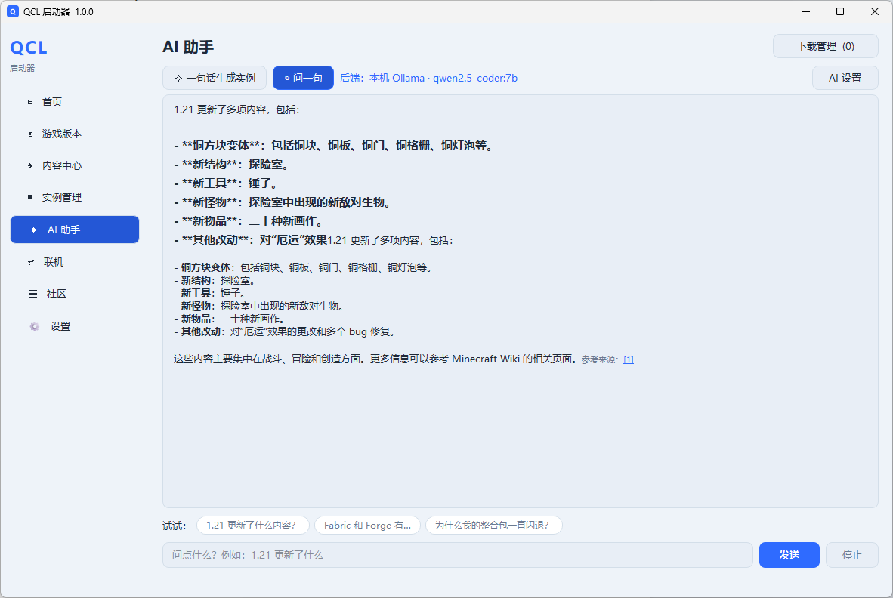
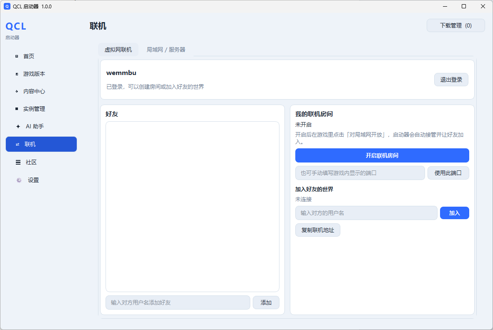
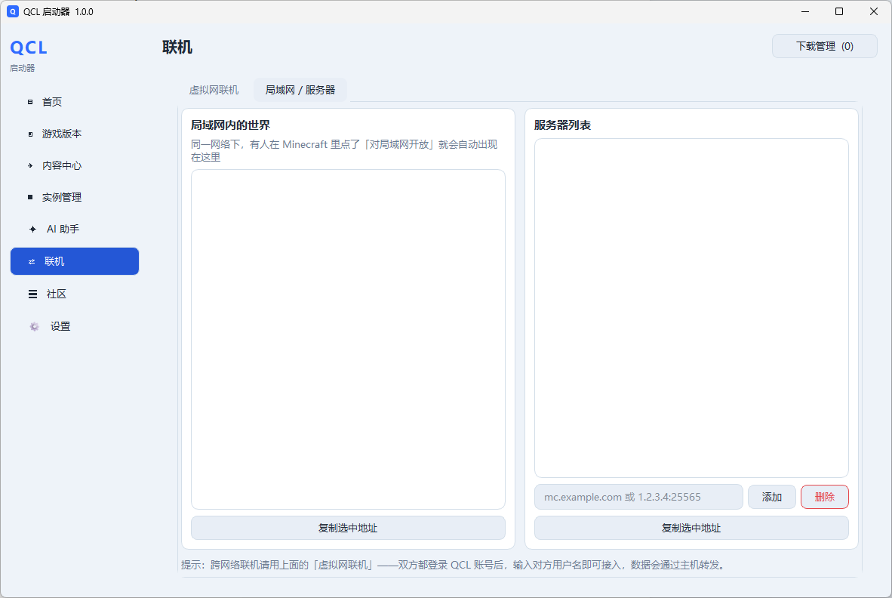
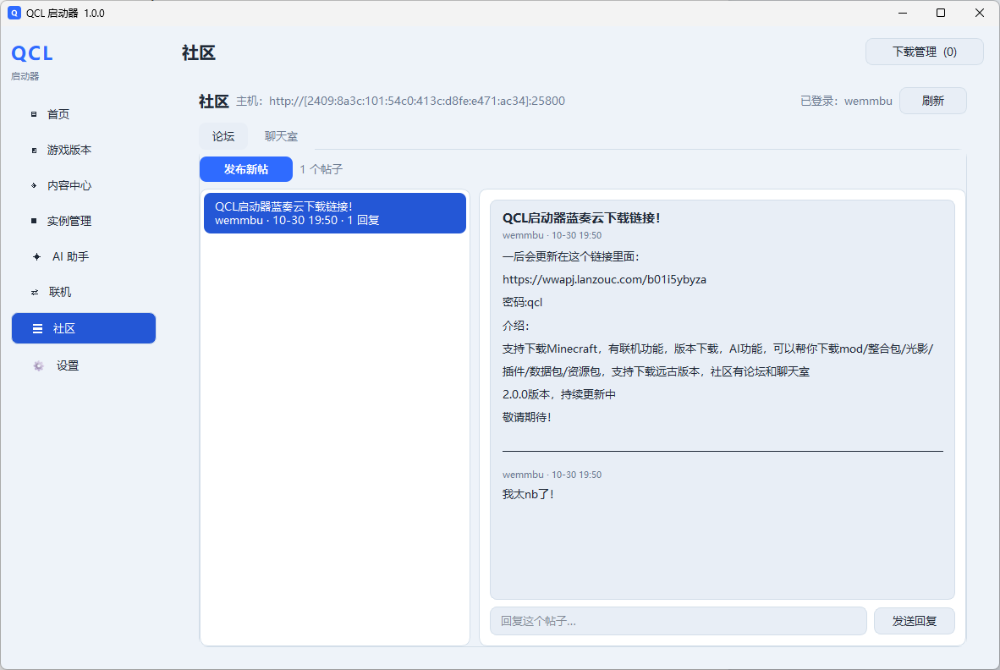
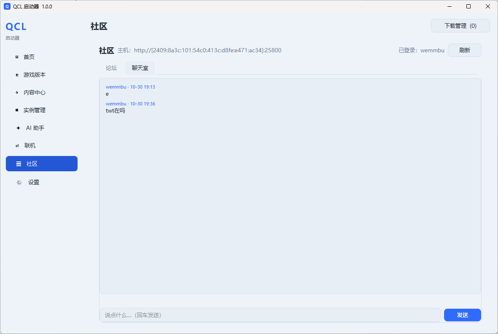
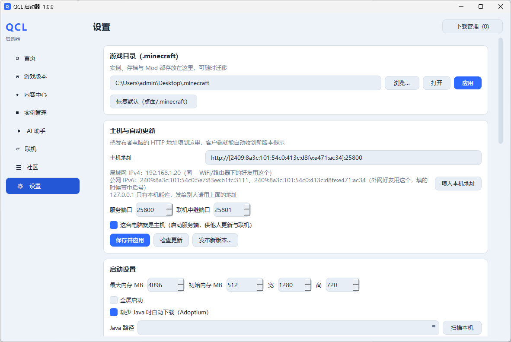
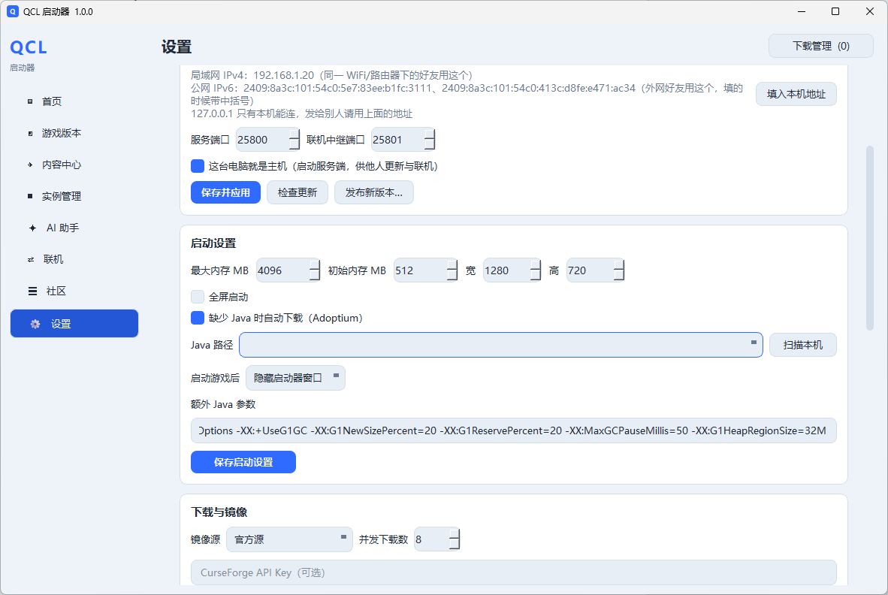
不用再去网上扒教程、找 Mod、对版本号。输入一句大白话，剩下的交给 QCL：
想和朋友一起玩？开个房间就行，跨网络也能连。
适合想把自己的整合包分发给玩家的场景。
持续打磨，每次更新都让启动更顺一点。
单文件安装程序，双击即装，自带卸载，存档数据单独存放、升级不丢。
单文件，双击运行
可自定义，默认装在用户目录
挑个版本，装个 Mod，直接开玩